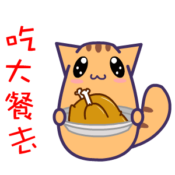

1.float属性
2.文字环绕图片

猫的性格实在有些古怪。说它老实吧，它的确有时候很乖。它会找个暖和地方，成
天睡大觉，无忧无虑。什么事也不过问。可是，赶到它决定要出去玩玩，就会走出一天
一夜，任凭谁怎么呼唤，它也不肯回来。说它贪玩吧，的确是呀，要不怎么会一天一夜
不回家呢？可是，及至它听到点老鼠的响动啊，它又多么尽职，闭息凝视，一连就是几
个钟头，非把老鼠等出来不拉倒！
3.文字环绕文字
《猫》
这种小动物确是古怪。不管你多么善待它，它也不肯跟着你上街去逛逛。它什么都
怕，总想藏起来。可是它又那么勇猛，不要说见着小虫和老鼠，就是遇上蛇也敢斗一斗。
它的嘴往往被蜂儿或蝎子螫的肿起来。
赶到猫儿们一讲起恋爱来，那就闹得一条街的人们都不能安睡。它们的叫声是那么
尖锐刺耳，使人觉得世界上若是没有猫啊，一定会更平静一些。
可是，及至女猫生下两三个棉花团似的小猫啊，你又不恨它了。它是那么尽责地看